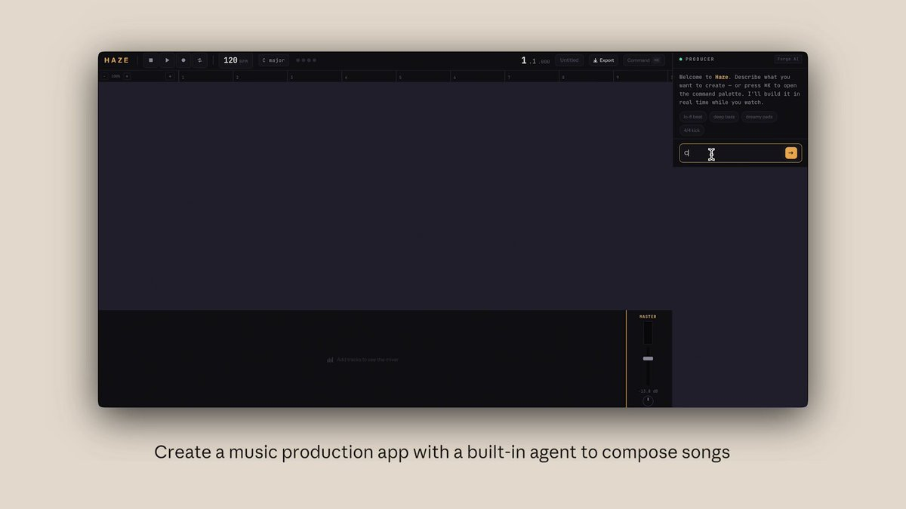

长时间运行的应用开发中的编排框架设计[译]
原文： 本文作者 Prithvi Rajasekaran，团队成员。
过去几个月，我一直在攻克两个相互关联的问题：让 Claude 产出高质量的前端设计，以及让它在无需人工干预的情况下构建完整的应用。这项工作源于我们早期在（frontend design skill）和（harness）上的探索——我和同事们通过提示工程和编排框架（harness）设计，将 Claude 的表现大幅提升到远超基线的水平，但两条路最终都遇到了天花板。
为了突破瓶颈，我开始寻找能够同时适用于两个截然不同领域的新型 AI 工程方法——一个由主观审美定义，另一个由可验证的正确性和可用性定义。受（GAN）的启发，我设计了一种多智能体架构，包含一个生成器（generator）和一个评估器（evaluator）。[译注：此处借鉴的是 GAN 中生成器与判别器对抗的结构思想，并非真正实现了一个 GAN。] 要构建一个既能可靠打分、又具备审美品味的评估器（evaluator），首先需要制定一套评判标准，将”这个设计好不好？“这样的主观判断转化为具体的、可评分的维度。
随后，我将这些技术应用到了长时间自主编码场景中，并带上了早期编排框架（harness）工作中的两条经验：将构建任务分解为可处理的小块，以及使用结构化的工件在会话之间传递上下文。最终的成果是一个三智能体架构——规划器（planner）、生成器（generator）和评估器（evaluator）——在数小时的自主编码会话中产出了功能丰富的全栈应用。
为什么朴素的实现方式不够用
我们此前已经展示过，编排框架（harness）的设计对长时间运行的智能体编码效果有着重大影响。在早期的一次中，我们用一个初始化智能体将产品规格分解为任务列表，再由一个编码智能体逐个实现功能，并通过传递工件在会话之间保持上下文。更广泛的开发者社区也殊途同归，比如”“方法，通过 hooks 或脚本让智能体持续迭代运转。
但有些问题始终挥之不去。面对更复杂的任务，智能体随着时间推移仍然容易跑偏。在拆解这个问题时，我们观察到智能体在执行此类任务时存在两种常见的失败模式。
第一种是模型在长任务中随着上下文窗口填满而逐渐丧失连贯性（参见我们关于（context engineering）的文章）。部分模型还会表现出”上下文焦虑”（context anxiety）——当它们认为自己接近上下文窗口的极限时，会过早地开始收尾工作。上下文重置（context reset）——即完全清空上下文窗口、启动一个全新的智能体，同时通过结构化交接将前一个智能体的状态和后续步骤传递过去——可以同时解决这两个问题。
这与上下文压缩（compaction）不同。压缩是对对话早期内容进行原地摘要，让同一个智能体在缩短的历史上继续工作。压缩保留了连续性，但没有给智能体一个全新起点，这意味着上下文焦虑（context anxiety）仍然可能存在。重置则提供了一个全新起点，代价是交接工件需要携带足够的状态，让下一个智能体能干净利落地接手。在早期测试中，我们发现 Claude Sonnet 4.5 表现出了相当强烈的上下文焦虑（context anxiety），仅靠压缩不足以支撑长任务的良好表现，因此上下文重置（context reset）成为了编排框架（harness）设计中不可或缺的一环。这解决了核心问题，但也给每次运行增加了编排复杂度、token 开销和延迟。
第二个问题——我们此前尚未触及的——是自我评估。当智能体被要求评价自己产出的成果时，它们倾向于自信满满地给出好评，即使在人类观察者看来质量明显平庸。这个问题在设计这类主观性任务上尤为突出，因为不存在类似可验证软件测试那样的二元判定。一个布局是精致还是平庸，全凭判断，而智能体在评价自己的作品时总是系统性地偏向正面。
然而，即便是在有可验证结果的任务上，智能体在完成任务的过程中有时也会表现出糟糕的判断力，从而拖累自身表现。将干活的智能体和评判的智能体分离开来，被证明是解决这一问题的有力杠杆。这种分离本身并不能立刻消除宽容倾向——评估器（evaluator）仍然是一个对 LLM 生成内容天然宽容的 LLM。但事实证明，调校一个独立的评估器使其保持怀疑态度，远比让生成器（generator）对自身作品保持批判性要容易得多。而一旦这种外部反馈存在，生成器就有了具体的迭代目标。
前端设计：让主观质量变得可评分
我从前端设计开始实验，因为自我评估的问题在这里最为明显。在没有任何干预的情况下，Claude 通常会倾向于安全、可预测的布局——技术上能用，但视觉上乏善可陈。
两个洞察塑造了我为前端设计构建的编排框架（harness）。第一，虽然美学无法完全量化为分数——个人品味永远存在差异——但通过编码设计原则和偏好的评分标准，美学质量是可以提升的。“这个设计美不美？”很难得到一致的回答，但”这个设计是否遵循了我们的优秀设计原则？“就给了 Claude 具体的评判依据。第二，将前端生成与前端评分分离，我们可以形成一个反馈循环，推动生成器（generator）产出更强的结果。
基于这个思路，我撰写了四条评分标准，同时写入了生成器（generator）和评估器（evaluator）的提示词中：
- 设计质量：设计是否给人一个有机整体的感觉，而非零件的拼凑？在这项上表现出色，意味着色彩、字体、布局、图像及其他细节共同营造出独特的氛围和个性。
- 原创性：是否有自主设计决策的痕迹，还是模板布局、组件库默认值和 AI 生成套路的堆砌？一个人类设计师应该能辨认出刻意的创意选择。未经修改的现成组件——或者 AI 生成的典型特征，比如白色卡片上的紫色渐变——在这项上会被判不合格。
- 工艺：技术执行层面：字体层级、间距一致性、色彩和谐、对比度。这是一项能力检验，而非创意检验。大多数合理的实现默认就能做得不错；不合格意味着基本功出了问题。
- 功能性：独立于美学的可用性。用户能否理解界面的用途，找到主要操作，顺畅地完成任务？
我刻意强调设计质量和原创性，将其权重置于工艺和功能性之上。Claude 在工艺和功能性上默认就表现不错，因为模型天然具备所需的技术能力。但在设计和原创性上，Claude 产出的东西往好了说也不过是平淡无奇。评分标准明确惩罚了高度同质化的”AI 罐头味”模式，通过加大设计和原创性的权重，推动模型在美学上更大胆地冒险。
我使用带有详细评分拆解的 few-shot 示例来校准评估器（evaluator），确保评估器的判断与我的偏好对齐，并减少跨迭代的评分漂移（score drift）。
整个循环构建在 之上，编排逻辑因此得以保持简洁。生成器（generator）智能体先根据用户提示创建一个 HTML/CSS/JS 前端。我给评估器（evaluator）配备了 Playwright MCP，让它可以直接与实时页面交互，然后对每条标准进行打分并撰写详细的评语。实际运行中，评估器会自主浏览页面、截图、仔细研究实现，然后才给出评估。这些反馈再作为下一轮迭代的输入回传给生成器。每次生成我运行 5 到 15 轮迭代，每一轮通常都会推动生成器朝更具辨识度的方向演进，因为它在回应评估器的批评。由于评估器是在实际浏览页面而非对着一张静态截图打分，每个循环都需要实实在在的时间。完整的运行最长可达四个小时。我还指示生成器在每次评估后做出一个策略决策：如果分数趋势向好，就精修当前方向；如果当前路线行不通，就转向一种全新的美学风格。
在多次运行中，评估器的评分在迭代过程中逐步提升，随后进入平台期，仍有上升空间。有些生成是渐进式打磨，另一些则在迭代之间发生了剧烈的美学转向。
评分标准的措辞对生成器的引导方式超出了我的预期。加入”the best designs are museum quality（最好的设计是博物馆级的）“这样的表述后，设计风格出现了某种趋同，这表明评分标准中的提示语言直接塑造了输出的特质。
虽然分数总体上随迭代提升，但并非总是呈线性上升。后期的实现整体上更好，但我经常发现自己更偏好中间某一轮而非最终版。实现的复杂度也随着轮次增加而上升——生成器在评估器反馈的驱动下，会去尝试更有野心的方案。即便是第一轮迭代，输出也明显优于完全不加提示的基线，这说明评分标准及其关联的语言本身就已经将模型从千篇一律的默认模式中引导出来了，而评估器的反馈则带来了进一步的精进。
有一个值得一提的例子：我让模型为一家荷兰艺术博物馆创建网站。到第九轮迭代时，它产出了一个简洁的深色主题着陆页，对应一个虚构的博物馆。页面视觉上很精致，但基本在我的预期之内。然而，在第十个循环中，它彻底推翻了之前的方案，将网站重新构想为一种空间体验：一个用 CSS 透视渲染的 3D 房间，铺着棋盘格地板，画作以自由布局的方式挂在墙上，用门廊式导航在展厅之间穿行，取代了滚动或点击。这是一种创造性的飞跃，是我在单次生成中从未见过的。
扩展到全栈开发
有了这些发现，我将这种受 GAN 启发的模式应用到了全栈开发中。生成器-评估器循环天然地映射到软件开发生命周期上——代码评审和 QA 在结构上扮演着与设计评估器相同的角色。
架构设计
在我们之前的中，我们通过一个初始化智能体、一个逐个处理功能的编码智能体，以及会话之间的上下文重置（context reset），解决了多会话编码的连贯性问题。上下文重置是一个关键突破：当时的编排框架使用的是 Sonnet 4.5，它会表现出前面提到的”上下文焦虑”倾向。构建一个能在上下文重置之间良好运作的编排框架，是让模型保持专注的关键。Opus 4.5 基本上自行消除了这种行为，所以我得以从这个编排框架中完全去掉上下文重置。所有智能体在整个构建过程中作为一个连续会话运行，由 的自动上下文压缩机制来处理上下文增长。
在这项工作中，我在原有编排框架的基础上构建了一个三智能体系统，每个智能体都针对我在之前运行中观察到的特定短板。系统包含以下智能体角色：
规划器（Planner）：我们之前的长时运行编排框架需要用户预先提供详细的规格说明。我希望把这一步自动化，于是创建了一个规划器智能体，它接收一段 1-4 句话的简单 prompt，将其扩展为完整的产品规格说明。我在 prompt 中要求它在范围上大胆一些，并专注于产品上下文和高层技术设计，而非详细的技术实现。这样做是因为我担心，如果规划器试图在一开始就规定细粒度的技术细节，一旦出错，规格说明中的错误会级联传导到下游实现中。更明智的做法是约束智能体需要交付什么，让它们在工作过程中自行摸索路径。我还要求规划器寻找机会将 AI 功能融入产品规格说明中。（参见底部附录中的示例。）
生成器（Generator）：之前编排框架中逐个功能推进的方式在范围管理上效果很好。我在这里采用了类似的模型，指示生成器以 Sprint 的方式工作，每次从规格说明中拿起一个功能来实现。每个 Sprint 使用 React、Vite、FastAPI 和 SQLite（后来换成了 PostgreSQL）技术栈来实现应用，生成器在每个 Sprint 结束时先自我评估，然后再移交给 QA。它还使用 git 进行版本控制。
评估器（Evaluator）：之前编排框架产出的应用往往看起来很惊艳，但你真正上手用的时候总会发现实打实的 bug。为了捕获这些问题，评估器使用 Playwright MCP 像用户一样点击浏览运行中的应用，测试 UI 功能、API 端点和数据库状态。然后它会根据发现的 bug 以及一组评估标准为每个 Sprint 打分——这些标准沿用了前端实验中的模式，并在此基础上扩展覆盖了产品深度、功能完整性、视觉设计和代码质量。每项标准都有一个硬性阈值，只要有任何一项低于阈值，该 Sprint 就判定失败，生成器会收到详细的问题反馈。
在每个 Sprint 开始前，生成器和评估器会协商一份 Sprint 契约：在写任何代码之前，先就这部分工作的”完成”标准达成一致。之所以设置这个环节，是因为产品规格说明有意保持高层次，而我需要一个步骤来弥合用户故事和可测试实现之间的鸿沟。生成器提出它打算构建什么以及如何验证成功，评估器审查这个提案以确保生成器在做正确的事情。双方反复迭代，直到达成共识。
通信通过文件进行：一个智能体写入文件，另一个智能体读取并在同一文件中回复，或者创建新文件供前一个智能体读取。生成器然后按照商定的契约进行构建，再将工作移交给 QA。这样既保证了工作忠于规格说明，又避免了过早过度规定实现细节。
运行编排框架
第一版编排框架使用的是 Claude Opus 4.5，我将用户 prompt 分别在完整编排框架和单智能体系统上运行以进行对比。选择 Opus 4.5 是因为在我开始这些实验时，它是我们最好的编码模型。
我写了以下 prompt 来生成一个复古电子游戏制作工具：
创建一个 2D 复古游戏制作工具，功能包括关卡编辑器、精灵编辑器、实体行为系统和可玩的测试模式。
下表列出了编排框架类型、运行时长和总成本。
- 单智能体：20 分钟，$9
- 完整编排框架：6 小时，$200
完整编排框架的成本超出 20 倍，但产出质量的差距立竿见影。
我期望的是一个能让我构建关卡及其组成部分（精灵、实体、地图布局），然后点击”播放”来实际游玩的界面。我先打开了单智能体的产出，初始界面看起来符合这些预期。
然而随着我不断点击探索，问题开始浮现。布局浪费空间，固定高度的面板让大部分视口都是空的。工作流很僵硬。尝试填充关卡时，它提示我先创建精灵和实体，但 UI 中没有任何引导告诉我应该按这个顺序操作。更关键的是，游戏本身是坏的。我的实体出现在了屏幕上，但什么都不响应输入。深入代码后发现，实体定义和游戏运行时之间的连线是断的，而界面上看不出任何端倪。
Opening screen 启动屏幕、Sprite editor 精灵编辑器、Game play 游戏运行
在评估完单智能体的运行结果后，我将注意力转向了完整编排框架的运行。这次运行同样始于同一句话的 prompt，但规划器将这个 prompt 扩展为一份包含 16 项功能、分布在十个 Sprint 中的完整规格说明。它远远超出了单智能体所尝试的范围。除了核心编辑器和游戏模式之外，规格说明还要求实现精灵动画系统、行为模板、音效和音乐、AI 辅助的精灵生成器和关卡设计器，以及带可分享链接的游戏导出功能。我让规划器读取了我们的，它利用其中的内容为应用创建了一套视觉设计语言，作为规格说明的一部分。每个 Sprint 开始前，生成器和评估器都会协商一份契约，定义该 Sprint 的具体实现细节和用于验证完成的可测试行为。
应用一打开，就明显比单智能体的产出更精致、更流畅。画布占满了整个视口，面板尺寸合理，界面具有一致的视觉风格，与规格说明中的设计方向保持一致。单智能体运行中的一些生硬之处仍然存在——工作流依然没有明确提示你应该先创建精灵和实体再去填充关卡，我不得不自己摸索。这看起来更像是基础模型在产品直觉上的缺失，而非编排框架本身要解决的问题，不过这确实提示了一个方向：在编排框架内进行有针对性的迭代，可以进一步提升产出质量。
深入使用各个编辑器后，完整编排框架相比单智能体的优势变得更加明显。精灵编辑器更丰富、功能更完善，拥有更清晰的工具面板、更好用的取色器和更顺手的缩放控件。
由于我要求规划器将 AI 功能融入规格说明，这个应用还内置了 Claude 集成，让我可以通过提示词生成游戏的不同部分。这大大加速了工作流。
Opening screen 启动屏幕、Sprite editor 精灵编辑器、AI game design AI 游戏设计、AI game design AI 游戏设计
Game play 游戏运行
最大的差别体现在游戏模式上。我确实能移动我的实体并进行游玩。物理引擎有些粗糙——我的角色跳上平台后与平台重叠了，直觉上感觉不对——但核心功能是可用的，而单智能体版本根本没做到这一点。移动了一会儿后，我确实遇到了 AI 构建游戏关卡的一些局限。有一面大墙我怎么也跳不过去，所以被卡住了。这说明编排框架在进一步打磨应用方面，还有一些常识性改进和边界情况需要处理。
通读日志后可以清楚地看到，评估器让实现始终忠于规格说明。每个 Sprint，它都会遍历 Sprint 契约中的测试标准，通过 Playwright 操作运行中的应用，将任何偏离预期行为的问题记录为 bug。契约非常细致——仅 Sprint 3 就有 27 条覆盖关卡编辑器的标准——而评估器的发现也足够具体，无需额外调查即可直接行动。下表展示了评估器识别出的几个问题示例：
契约标准 1：矩形填充工具允许点击拖拽，用选中的地砖填充矩形区域
失败 — 工具只在拖拽起点和终点放置了地砖，而没有填充整个区域。fillRectangle 函数存在但在 mouseUp 时未被正确触发。
契约标准 2：用户可以选择并删除已放置的实体出生点
失败 — LevelEditor.tsx:892 处的 Delete 键处理函数要求 selection 和 selectedEntityId 同时被设置，但点击实体只设置了 selectedEntityId。条件应改为 selection || (selectedEntityId && activeLayer === 'entity')。
契约标准 3：用户可以通过 API 重新排列动画帧
失败 — PUT /frames/reorder 路由定义在 /{frame_id} 路由之后。FastAPI 将 'reorder' 当作 frame_id 的整数来匹配，返回 422 错误："unable to parse string as an integer。"
让评估器达到这个水平花了不少功夫。开箱即用的 Claude 并不是一个好的 QA 智能体。在早期运行中，我眼看着它发现了合理的问题，然后自己说服自己这些不是大问题，最后批准通过了。它还倾向于做表面测试，而不是深入探测边界情况，所以更隐蔽的 bug 经常漏过。调优循环是这样的：阅读评估器的日志，找到它的判断与我的判断产生分歧的地方，然后更新 QA 的 prompt 来解决这些问题。经过好几轮这样的迭代，评估器的打分才达到我认为合理的水平。即便如此，编排框架的产出仍然暴露了模型 QA 能力的局限：小的布局问题、某些交互感觉不够直觉，以及在更深层嵌套功能中评估器未充分测试到的未发现 bug。通过进一步调优，验证方面显然还有更大的提升空间。但与单智能体运行——应用的核心功能根本无法工作——相比，提升显而易见。
迭代编排框架
第一版编排框架的结果令人鼓舞，但它也臃肿、缓慢、昂贵。顺理成章的下一步是找到简化框架的方法，同时不损失性能。这一方面是常识，一方面也源于一个更普遍的原则：编排框架中的每个组件都隐含着一个假设——“模型自己做不到什么”——而这些假设值得反复压力测试——因为它们可能一开始就是错的，也因为随着模型进步，它们很快就会过时。我们的博客文章 将这一理念表述为”找到最简可行方案，只在必要时才增加复杂度”，这个模式在任何维护智能体编排框架的人身上都反复出现。
在第一次尝试简化时，我大刀阔斧地削减了框架，并尝试了一些有创意的新想法，但未能复现原始版本的性能。而且也变得很难判断框架设计中哪些部分真正起作用，以及以何种方式起作用。基于这次经验，我转向了更系统的方法——每次只移除一个组件，然后审视它对最终结果的影响。
在经历这些迭代周期的同时，我们也发布了 Opus 4.6，这进一步推动了降低框架复杂度的动力。有充分理由相信 4.6 比 4.5 需要更少的脚手架。引用我们的：“[Opus 4.6] 规划更周密，能更持久地执行智能体任务，在大型代码库中运行更可靠，并具备更强的代码审查和调试能力来发现自身错误。”它在长上下文检索方面也有了大幅提升。而这些，恰恰都是编排框架一直在补位的能力。
移除 Sprint 结构
我首先彻底移除了 Sprint 结构。Sprint 结构此前的作用是将工作分解为若干块，让模型能够连贯地处理。鉴于 Opus 4.6 的改进，有充分理由相信模型本身就能胜任这项工作，而不需要这种分解。
我保留了规划器和评估器，因为两者都仍然有明显的价值。没有规划器的话，生成器会低估任务范围：面对原始 prompt，它会直接开始构建而不先制定规格说明，最终产出的应用功能远不如有规划器参与时丰富。
移除 Sprint 结构后，我把评估器改为在整个运行结束时做一次性评审，而不是逐 Sprint 打分。由于模型能力大幅增强，评估器在不同任务上的关键程度也随之改变，其价值取决于任务处于模型独立可靠完成的能力边界的哪个位置。在 4.5 上，这条边界离得很近：我们构建的应用恰好处于生成器独立完成的极限附近，评估器能在整个构建过程中捕捉到有意义的问题。到了 4.6，模型的原始能力提升了，边界也随之外移。以前需要评估器把关才能连贯实现的任务，现在往往已在生成器的独立能力范围之内——对于这些任务，评估器成了不必要的开销。但对于那些仍处在生成器能力边缘的部分，评估器依然能带来实实在在的提升。
实际的启示是：评估器并不是一个固定的”要或不要”的决策。当任务超出当前模型独立可靠完成的范围时，它就物有所值。
在结构简化的同时，我还加入了提示词优化，改进框架构建 AI 功能的方式——具体来说，让生成器构建一个真正的智能体，通过工具来驱动应用本身的功能。这花了不少迭代功夫，因为相关知识足够新，Claude 的训练数据对此覆盖较薄。但经过充分调优后，生成器已经能正确地构建智能体了。
更新后的编排框架结果
为了检验更新后的编排框架，我使用以下 prompt 来生成一个数字音频工作站（DAW）——一个用于作曲、录音和混音的音乐制作程序：
在浏览器中使用 Web Audio API 构建一个功能完备的 DAW。
这次运行依然耗时且昂贵，大约 4 小时，token 成本 124 美元。
大部分时间花在了构建器上，它连贯运行了两个多小时，无需 Opus 4.5 所依赖的 Sprint 分解。
- 规划器：4.7 分钟，$0.46
- 构建（第 1 轮）：2 小时 7 分钟，$71.08
- QA（第 1 轮）：8.8 分钟，$3.24
- 构建（第 2 轮）：1 小时 2 分钟，$36.89
- QA（第 2 轮）：6.8 分钟，$3.09
- 构建（第 3 轮）：10.9 分钟，$5.88
- QA（第 3 轮）：9.6 分钟，$4.06
- V2 编排框架合计：3 小时 50 分钟，$124.70
与之前的编排框架一样，规划器将一行 prompt 扩展为完整的规格说明。从日志中可以看到，生成器模型在应用规划和智能体设计方面做得很好——它完成了智能体的接线和测试，然后才交给 QA。
话虽如此，QA 智能体仍然捕捉到了真实的缺口。在第一轮反馈中，它指出：
这是一个设计还原度优秀、AI 智能体扎实、后端良好的强应用。主要的失分点在功能完整度——虽然应用看起来很惊艳，AI 集成也运行良好，但若干核心 DAW 功能仅停留在展示层，缺乏交互深度：片段无法在时间线上拖拽/移动，没有乐器 UI 面板（合成器旋钮、鼓机打击垫），也没有可视化效果编辑器（EQ 曲线、压缩器表头）。这些不是边缘场景——它们是让 DAW 可用的核心交互，规格说明中也明确要求了这些功能。
在第二轮反馈中，它再次捕捉到了几个功能缺口：
剩余缺口： - 音频录制仍然是桩代码（按钮可切换但没有麦克风采集） - 片段边缘拖拽缩放和片段分割未实现 - 效果可视化是数字滑块，不是图形化的（没有 EQ 曲线）
生成器在独自运行时仍然容易遗漏细节或留下桩代码功能，QA 在捕捉这些最后一公里的问题上依然发挥着价值，让生成器去修复它们。
根据 prompt，我期望得到一个可以创建旋律、和声和鼓点编排，将它们组织成一首歌，并在过程中得到内置智能体帮助的程序。下面的视频展示了最终结果。

这个应用离专业音乐制作程序还很远，智能体的作曲能力显然还有很大的提升空间。此外，Claude 实际上听不到声音，这使得 QA 反馈环在音乐品味方面的效果大打折扣。
但最终的应用具备了一个功能完整的音乐制作程序的所有核心要素：一个可用的编排视图、混音器和走带控制，全部在浏览器中运行。不仅如此，我完全通过提示词完成了一段简短的歌曲片段：智能体设定了速度和调性，铺设了旋律，构建了鼓轨，调整了混音器电平，还加上了混响。歌曲创作的核心原语都已就位，智能体能够自主驱动它们，使用工具从头到尾完成一个简单的制作。你可以说它还没到完美的调上——但已经越来越接近了。
展望未来
随着模型持续进步，我们大致可以预期它们能够工作更长时间、处理更复杂的任务。有时，这意味着围绕模型的脚手架会随着时间推移变得不那么重要，开发者可以等待下一代模型，看到某些问题自然而然地被解决。另一方面，模型越强，开发编排框架来完成超出模型基线能力的复杂任务的空间就越大。
带着这些认识，这项工作中有几点经验值得传承。始终保持良好的实践：在你所使用的模型上做实验，阅读它在真实问题上的运行轨迹，调优其表现以达到你期望的结果。在处理更复杂的任务时，有时通过分解任务并为问题的各个方面分配专门的智能体，可以获得额外的提升空间。而当新模型到来时，通常的最佳实践是重新审视编排框架——剥离那些不再对性能起关键作用的部分，并加入新的组件来实现此前可能无法达到的更强能力。
从这项工作中，我得出一个信念：随着模型进步，有趣的编排框架组合空间并没有缩小。相反，它在移动——而 AI 工程师真正有趣的工作，是不断找到下一个新颖的组合。
致谢
特别感谢 Mike Krieger、Michael Agaby、Justin Young、Jeremy Hadfield、David Hershey、Julius Tarng、Xiaoyi Zhang、Barry Zhang、Orowa Sidker、Michael Tingley、Ibrahim Madha、Martina Long 和 Canyon Robbins 对这项工作的贡献。
同时感谢 Jake Eaton、Alyssa Leonard 和 Stef Sequeira 在文章撰写过程中提供的帮助。
附录：规划器智能体生成的示例计划
RetroForge - 2D 复古游戏制作工具
概述
RetroForge 是一个基于 Web 的创意工作室，用于设计和构建 2D 复古风格电子游戏。它将经典 8 位和 16 位游戏美学的怀旧魅力与现代、直觉化的编辑工具相结合——让从业余爱好者到独立开发者的任何人都能将游戏创意变为现实，无需编写传统代码。
该平台提供四个集成的创意模块：基于地砖的关卡编辑器用于设计游戏世界，像素画精灵编辑器用于制作视觉素材，可视化实体行为系统用于定义游戏逻辑，以及即时可玩测试模式用于实时游戏测试。通过在全流程中融入 AI 辅助（由 Claude 驱动），RetroForge 加速了创作过程——帮助用户通过自然语言交互生成精灵、设计关卡和配置行为。
RetroForge 面向热爱复古游戏美学但需要现代便利性的创作者。无论是重现童年的平台跳跃、RPG 或动作游戏，还是在复古约束下发明全新体验，用户都可以快速原型制作、可视化迭代，并与他人分享自己的作品。
功能
1. 项目仪表板与管理
项目仪表板是 RetroForge 中所有创作工作的大本营。用户需要一种清晰、有序的方式来管理游戏项目——创建新项目、回到进行中的作品，并一目了然地了解每个项目包含的内容。
用户故事：作为用户，我希望能够：
- 创建一个带有名称和描述的新游戏项目，以便开始设计我的游戏
- 看到所有现有项目以视觉卡片的形式展示，显示项目名称、最后修改日期和缩略图预览，以便快速找到并继续我的工作
- 打开任何项目进入完整的游戏编辑器工作空间，以便对游戏进行编辑
- 删除不再需要的项目（带确认对话框以防误操作），以便保持工作空间整洁
- 复制现有项目作为新游戏的起点，以便复用之前的工作
项目数据模型：每个项目包含：
项目元数据（名称、描述、创建/修改时间戳）
画布设置（分辨率：如 256x224、320x240 或 160x144）
地砖尺寸配置（8x8、16x16 或 32x32 像素）
调色板选择
所有关联的精灵、地砖集、关卡和实体定义
...
Want to publish your own Article?
Upgrade to Premium